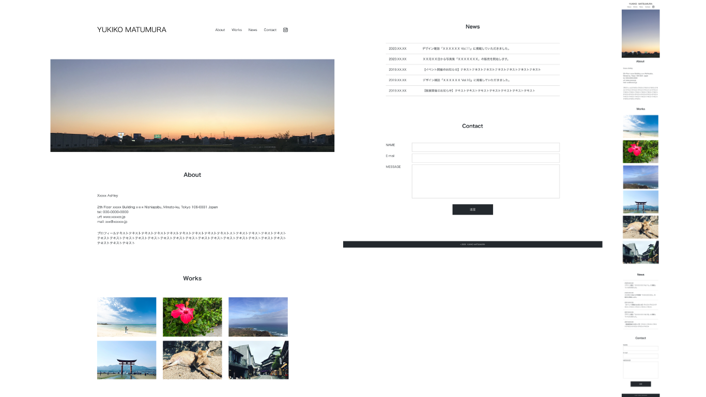
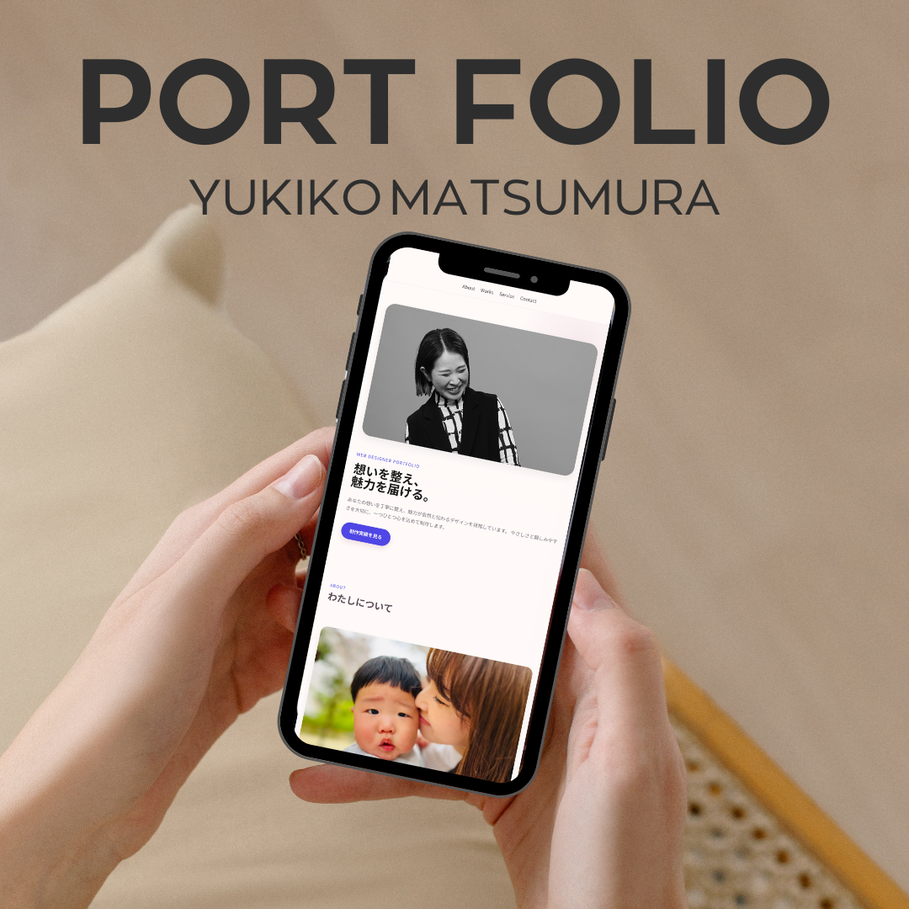
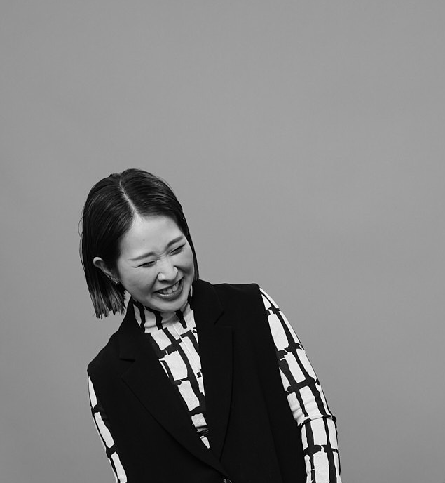
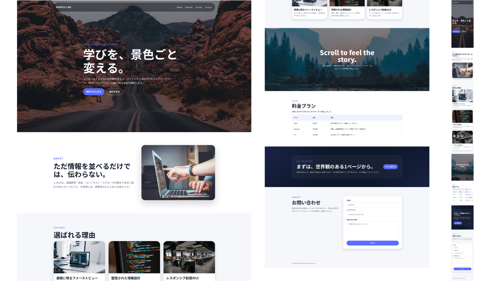
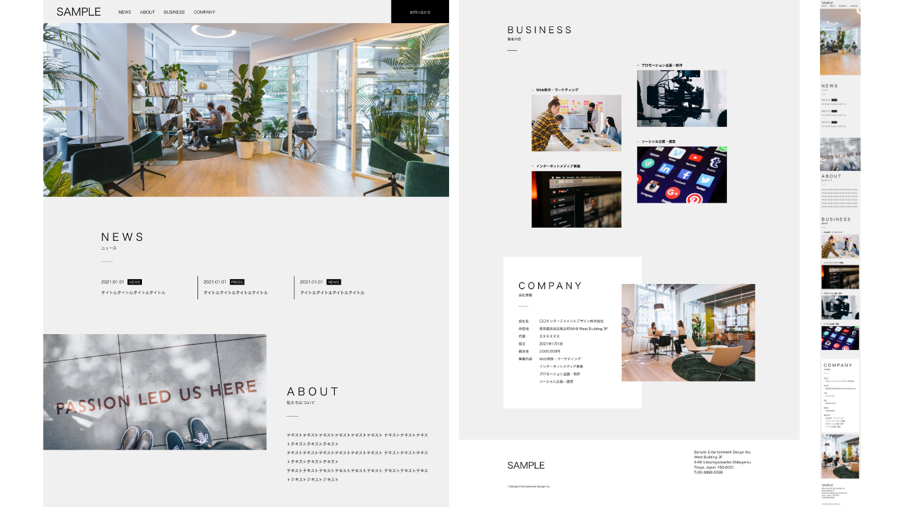

PORTFOLIO SITE
ポートフォリオサイト
カメラマンさんのポートフォリオを制作しました。余白とシンプルな構成と
視線の流れを意識し、作品が引き立つ設計にしています。
(※こちらは架空サイトです)
WEB DESIGNER PORTFOLIO
想いや目的を丁寧に整理し、 “ちゃんと伝わる”ホームページを制作します。 やさしさと親しみやすさを大切に、 ひとつひとつ心を込めてお作りします。
制作実績を見る
ABOUT

以前は雑貨屋で販売職として働き、 「どう伝えたら魅力が伝わるか」を考えることの大切さを学びました。 現在は3児の母として子育てをしながら、 ホームページ制作に取り組んでいます。 ただ見た目がきれいなだけでなく、 想いや価値がちゃんと伝わるデザインを大切にしています。
1992年、愛媛県松山市生まれ。
好きなものはコーヒーとお酒、そしておいしいごはん。
WORKS

PORTFOLIO SITE
カメラマンさんのポートフォリオを制作しました。余白とシンプルな構成と
視線の流れを意識し、作品が引き立つ設計にしています。
(※こちらは架空サイトです)

LANDING PAGE
パララックスデザインを取り入れ、スクロールに合わせて世界観を感じられるデザインに仕上げました。
(※こちらは架空サイトです)

CORPORATE SITE
WEB制作会社のコーポレートサイトを制作しました。
企業の信頼性を伝えるため、余白と整ったレイアウトで構成。
情報を見やすく整理し、安心感のあるデザインに仕上げています。
(※こちらは架空サイトです)
SERVICE
バナー制作、LPデザイン、コーポレートサイトのデザインなどの制作が可能です。
HTML/CSSを使用し、デザインの魅力がしっかり伝わるよう丁寧に コーディングします。レスポンシブ対応も意識し、見やすく使いやすいサイトを制作します。
WordPressやstudioなどのノーコードツールを活用し目的に 合わせたホームページ制作を行なっています。
CONTACT
お仕事のご相談や制作のご依頼など、お気軽にお問い合わせください。
メール、またはInstagramのDMにて直接お問い合わせいただけます。